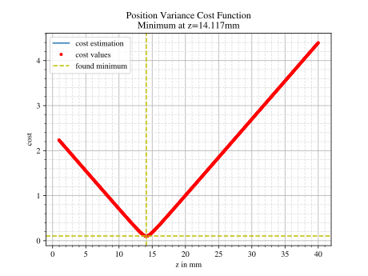
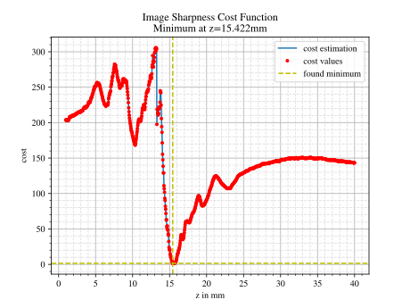

4.8. Focus Finding#
4.8.1. Goal#
Focus finding can be categorized into two different goals
finding a focal point
finding the position of an image plane in an imaging system
4.8.2. Focus Modes#
The following focus methods are available:
Position Variance |
minimizes the variance of the lateral ray position |
Airy Disc Weighting |
weights the ray positions with a spatial sensitivity of the zeroth order of an airy disc |
Irradiance Maximum |
finds the position with the highest irradiance |
Irradiance Variance |
finds the positions with the highest irradiance variance |
Image Sharpness |
finds the position with the sharpest edges |
More details as well as the mathematical formulations can be found in Section 6.6.
4.8.3. Usage#
To use the focus finding you will need a traced Raytracer geometry with one or multiple ray sources.
The autofocus function is then called by passing the focus mode and a starting position.
Focussing then tries to find the focus in a search region between the last lens (or the outline) and the next lens (or the outline).
res, afdict = RT.autofocus("Position Variance", 12.09)
autofocus returns two results, where the first one is a scipy.optimize.OptimizeResult object with information on the root finding.
The found z-position is accessed with res.x.
The second return value includes some additional information, while these are mostly only useful for the TraceGUI information or the cost plot.
By default, rays of all different sources are used to autofocus. Optionally a source_index parameter can be provided to use only a specific ray source.
res, afdict = RT.autofocus("Position Variance", 12.09, source_index=1)
With many rays the focus finding can get very slow. However, for modes "Position Variance", "Airy Disc Weighting" after some large number of rays the cost function does not change anymore. That’s why it is sufficient to limit the number of rays for those cases.
You can higher or lower the number N for this with a parameter. Note that this rarely needs to be done.
Mode "Position Variance" uses a slightly different approach for root finding, which leads to some parameters missing in afdict.
When plotting a cost plot, as described later, these parameters need to be calculated and included. This is done by setting return_cost=True, but don’t set it if not necessary, as it unfortunately slows down the focus mode.
res, afdict = RT.autofocus("Position Variance", 12.09, N=10000, return_cost=True)
4.8.4. Limitations#
Below you can find some limitations of autofocus in optrace
search only between lenses or a lens and the outline
the behavior of filters and apertures is ignored. If a ray exists at the start of a search region, it also exists at the end.
the same way rays are not absorbed by the outline in the search region
in more complex cases only a local minimum is found
see the limitations for each method in Section 6.6.
4.8.5. Application Cases#
Below you can find multiple application cases an preferred autofocus methods.
- Case 1: perfect, ideal focal point
examples: focus of an ideal lens. Small, local illumination of a real lens
preferred methods: all methods find the focus correctly, for performance reason “Position Variance” should be used
- Case 2: broad or no distinct focal point
examples: lens with large spherical aberration, multifocal lens
preferred methods: None, largely different behavior depending on method choice
- behaviour known from experience
Position Variance: finds a compromise between multiple foci, often inbetween their position
Airy Disc Weighting: Ignores glares, halos and rays with large distance from airy disc
Irradiance Maximum: finds the focus with the largest irradiance
Image Sharpness: Not suited, since its searches for sharp structures
Irradiance Variance: similar behavior to Image Sharpness and Irradiance Maximum
- Case 3: finding the image distance
example: lens setup with multiple lenses, we want to find the distance where the image has the highest sharpness
preferred methods: Image Sharpness, in some specific edge cases Irradiance Variance/Maximum might work.
4.8.6. Cost Plots#
Cost plots are especially useful to debug the focus finding and check how pronounced a focus or focus region is.
Plotting the cost function and result is done by calling the autofocus_cost_plot method from optrace.plots.
It requires the res, afdict parameters from before.
from optrace.plots import autofocus_cost_plot
autofocus_cost_plot(res, afdict)
Optionally one can overwrite the title and make the plot window blocking by setting block=True.
autofocus_cost_plot(res, afdict, title="abcd", block=True)
Below you can find examples for cost plots.
 Fig. 4.37 Focus finding for mode “Position Variance” in the |
 Fig. 4.38 Focus finding for mode “Image Sharpness” in the |
{kind=link}
{kind=link}
When working with the TraceGUI it also outputs focus information, like the following:
Found 3D position: [5.684185e-06mm, 2.022295e-06mm, 15.39223mm]
Search Region: z = [0.9578644mm, 40mm]
Method: Irradiance Maximum
Used 200000 Rays for Autofocus
Ignoring Filters and Apertures
OptimizeResult:
message: CONVERGENCE: REL_REDUCTION_OF_F_<=_FACTR*EPSMCH
success: True
status: 0
fun: 0.019262979304881897
x: 15.3922327445026
nit: 4
jac: [ 9.024e-03]
nfev: 102
njev: 51
hess_inv: <1x1 LbfgsInvHessProduct with dtype=float64>